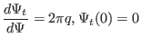

Next: Constructing magnetic surface coordinate Up: Calculating coordinate Previous: Verification of Jabobian
The cylindrical coordinates
 is a right-hand system, with the
positive direction of
is a right-hand system, with the
positive direction of  pointing vertically up. In GTAW code, the positive
direction of
pointing vertically up. In GTAW code, the positive
direction of  is chosen in the anticlockwise direction when observers
look along the direction of
is chosen in the anticlockwise direction when observers
look along the direction of
 . Then the definition
indicates that (1)
. Then the definition
indicates that (1)
 is negative if
is negative if
 points from the
magnetic axis to LCFS; (2)
points from the
magnetic axis to LCFS; (2)
 is positive if
is positive if
 points
from the LCFS to the magnetic axis. This can be used to determine the sign of
Jacobian after using the analytical formula to obtain the absolute value of
Jacobian.
points
from the LCFS to the magnetic axis. This can be used to determine the sign of
Jacobian after using the analytical formula to obtain the absolute value of
Jacobian.
The radial coordinate  can be chosen to be various surface function,
e.g., volume, poloidal or toroidal magnetic flux within a magnetic surface.
can be chosen to be various surface function,
e.g., volume, poloidal or toroidal magnetic flux within a magnetic surface.
The frequently used radial coordinates include
 , and
, where
, and
, where
 is defined by
is defined by
| (202) |
|  | (203) |
| (204) |
If , then
| (205) |